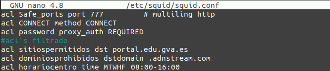
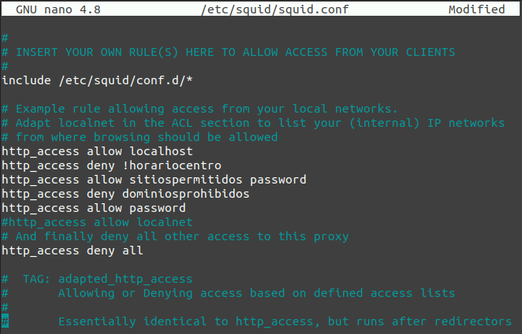
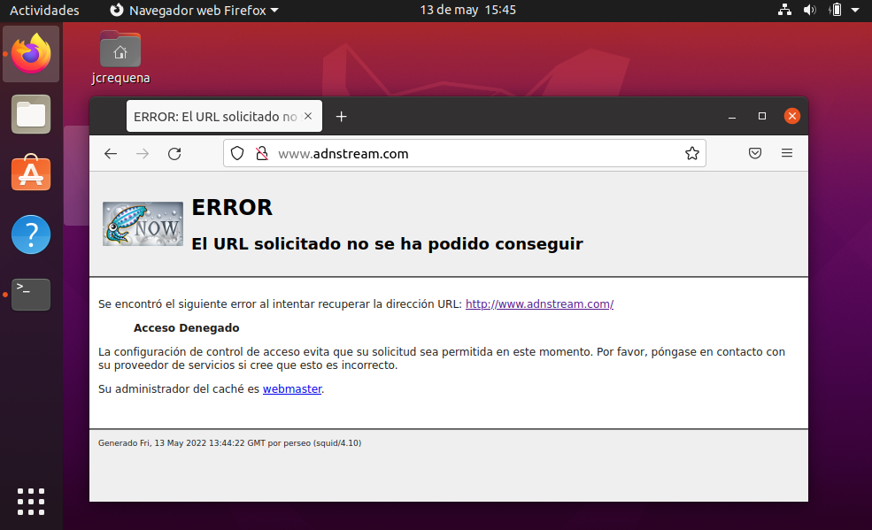
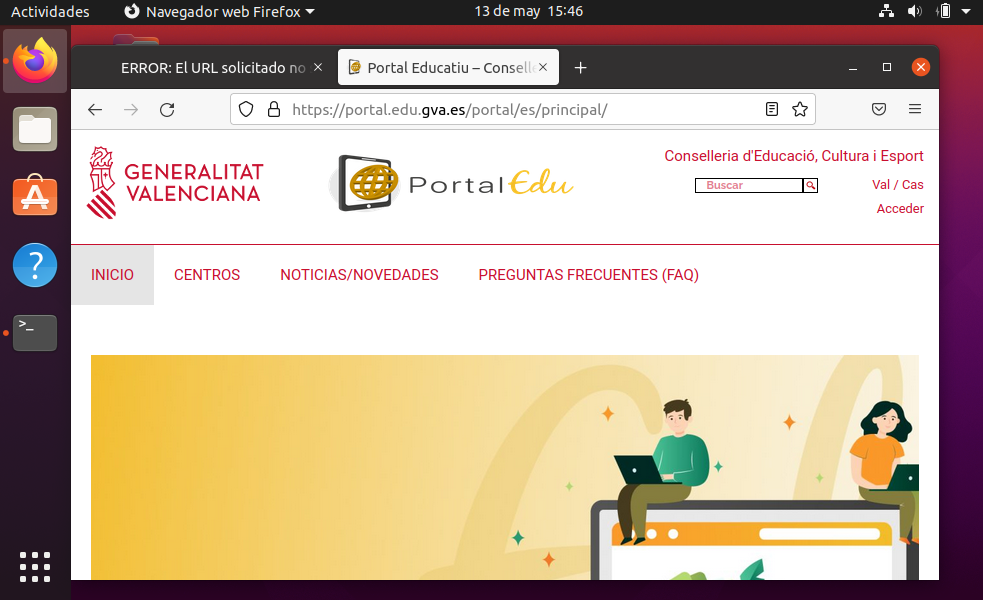
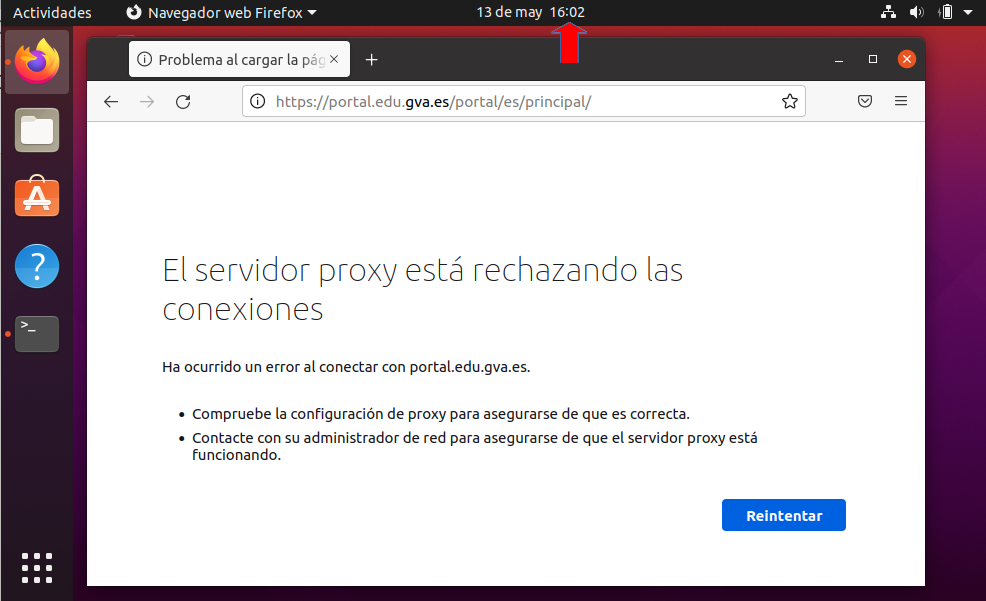
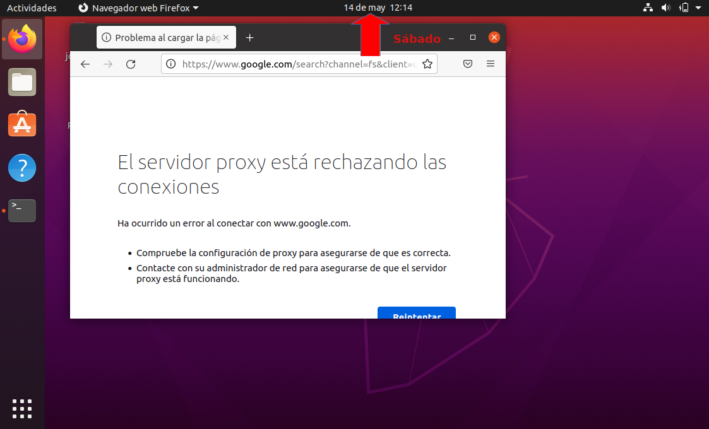

4. Proxy con filtrado
1. Introducción
En el capítulo anterior, se se ha establecido quién puede acceder a los servicios del proxy de la red, pero además, se puede configurar el mismo para permitir o denegar aspectos como por ejemplo:
- Las páginas web y los dominios.
- Los días de la semana y las horas.
- Hosts origen.
- Puertos destino.
- Protocolos.
Aunque existen aplicaciones como DansGuardian que filtran el contenido de las páginas web y que son más potentes que Squid, en este capítulo se utilizan las herramientas que se disponen en el proxy sobre Ubuntu Server.
En general, para cada uno de los casos, se va a definir una lista de acceso (acl) y se va a aplicar para denegar o permitir el acceso, teniendo en cuenta que, aunque la definición de las acl no tiene por qué seguir un orden, su aplicación sí que debe escribirse guardando el orden en el que se desea que sea consultada.
A continuación, se puede observar la sintaxis de algunas algunos tipos de acl recogidos en el fichero /etc/squid/squid.conf referidos a tiempo.
# acl aclname time [day-abbrevs] [h1:m1-h2:m2]
# # [fast]
# # day-abbrevs:
# # S - Sunday
# # M - Monday
# # T - Tuesday
# # W - Wednesday
# # H - Thursday
# # F - Friday
# # A - Saturday
# # h1:m1 must be less than h2:m2
Una vez se tengan definidas las acl, hay que usar la etiqueta http_access para permitir o denegar el acceso HTTP, HTTPS o FTP basándose en las acl. La sintaxis es:
http_access allow|deny [!]aclname ...
Donde,
- allow indica que si la acl coincide con la petición el acceso se permite. Obligatoriamente, debe aparecer allow o deny, pero no ambas.
- deny indica que si la acl coincide con la petición el acceso se deniega. Obligatoriamente, debe aparecer allow o deny, pero no ambas.
- ! indica que http_acces permitirá o denegará en el caso de que la petición NO coincida con la definición de la acl. Los corchetes indican que este símbolo puede aparecer o no. Hay que tener en cuenta que los corchetes no deben escribirse.
Es importante tener cuenta que:
- Si no hay líneas de "http_access" presentes, el valor predeterminado es denegar la solicitud.
- Si ninguna de las líneas de "http_access" causa una coincidencia, el valor predeterminado es opuesto a la última línea de la lista. Es decir, si la última línea fue denegar, el valor predeterminado es permitir. Por el contrario, si la última línea permite, el valor predeterminado será denegar.
Por estas razones, es buena idea tener una entrada "deny all" al final de la listas para evitar posibles confusiones.
2. Caso práctico
Como ejemplo, se van a insertar en el servidor proxy estas tres acl (después de la última acl) en el fichero squid.conf.
acl sitiospermitidos dst portal.edu.gva.es
acl dominiosprohibidos dstdomain .adnstream.com
acl horariocentro time MTWHF 08:00-16:00

Figura 1. Configuración de las acl's.
Con ellas se está definiendo lo siguiente:
- sitiospermitidos: recoge el sitio portal.edu.gva.es.
- dominiosprohibidos: define cualquier sitio del dominio .adnstream.com.
- horariocentro: se define como el tiempo comprendido entre las 8:00 y las 16:00 de lunes a viernes.
Una vez creadas las acl, el siguiente paso es añadir las etiquetas http_access para que quede de la siguiente manera:
#
# INSERT YOUR OWN RULE(S) HERE TO ALLOW ACCESS FROM YOUR CLIENTS
#
# Example rule allowing access from your local networks.
# Adapt localnet in the ACL section to list your (internal) IP networks
# from where browsing should be allowed
http_access allow localhost
http_access deny !horariocentro
http_access allow sitiospermitidos password
http_access deny dominiosprohibidos
http_access allow password
#http_access allow localnet
# And finally deny all other access to this proxy
http_access deny all
En negrita aparecen las nuevas entradas, en rojo la almohadilla que anula la aplicación de la acl localnet. Ten en cuenta que el orden debe ser el mismo, ya que si lo cambias puede que el escenario no funcione como se espera. La configuración queda de la siguiente manera:
En negrita aparecen las nuevas entradas, en rojo la almohadilla que anula la aplicación de la acl localnet. Es importante que el orden sea el mismo.
La configuración queda de la siguiente manera:
- Se permiten todas las peticiones que vienen del mismo equipo en el que está instalado el proxy.
- Se deniegan las peticiones fuera del horario del centro que no vengan del propio equipo.
- Se permite el acceso a todas las páginas web incluidas en la acl sitiospermitidos, si son realizadas dentro del horario del centro y por un usuario validado (password).
- Se deniega el acceso a todos los sitios web de los dominios definidos en dominiosprohibidos. Ten en cuenta que se podría tener acceso a alguno de ellos si está incluido en la acl sitiospermitidos.
- Se permiten todos los accesos realizados por usuarios validados.
- Se deniega el resto de tráfico.

Figura 2. Configuración de los accesos.
2.1 Comprobaciones
Una vez se aplica la nueva configuración en el servidor, se realiza una batería de pruebas desde el navegador de un equipo de la red interna con el proxy configurado para realizar las peticiones al proxy.
|  |  |
| Figura 3. Acceso denegado al dominio configurado como no permitido. | Figura 4. Acceso al sitio permitido. |
|  |  |
| Figura 5. Acceso no permitido fuera de horario. | Figura 6. Acceso no permitido fuera de día. |
{kind=link}
Obra publicada con Licencia Creative Commons Reconocimiento No comercial Compartir igual 4.0